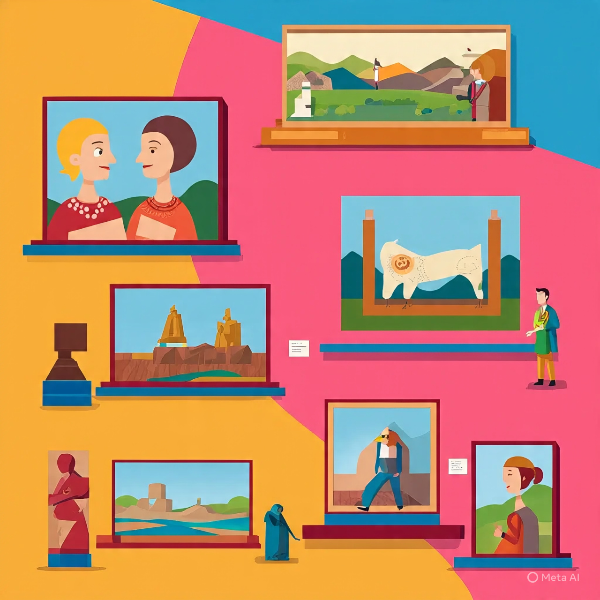
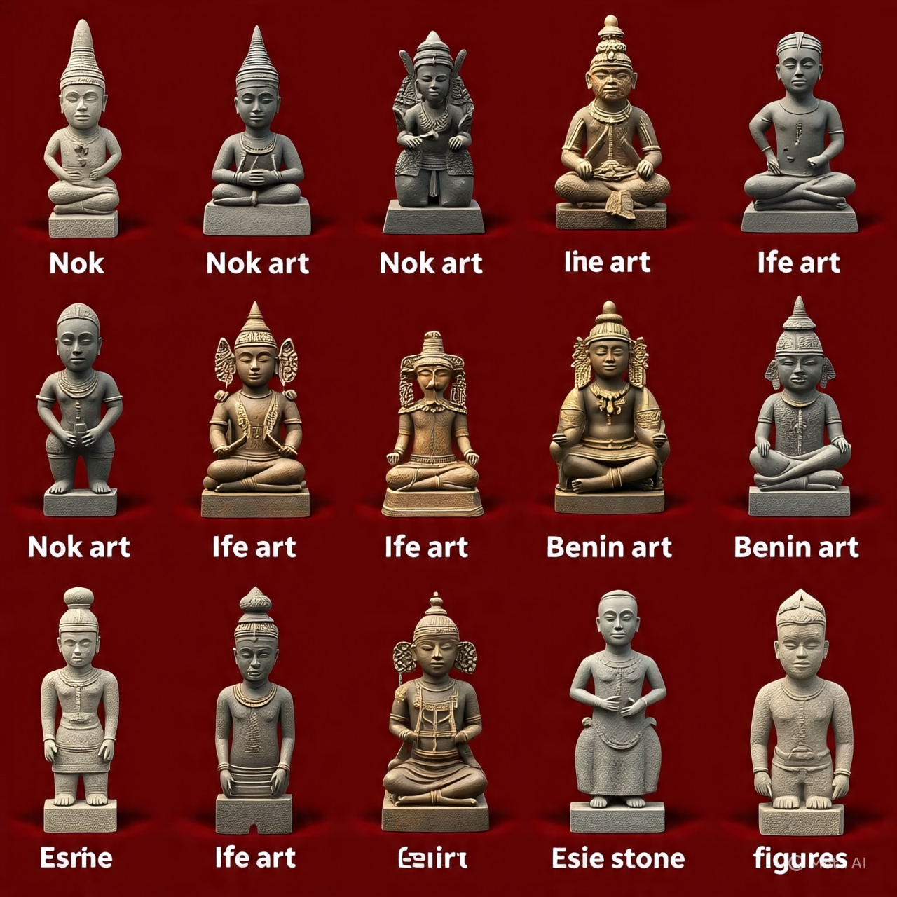

ART
📚HISTORY AND ORIGIN OF ART
What is Art?
Art is a way of expressing ideas, feelings, and experiences using lines, shapes, colours, sounds, movement, and words. It is something people create using their hands, voice, body, or tools to make life more beautiful and meaningful.

Origin of Art
Art did not start today. It has existed since the beginning of human life. Even before people learned how to read and write, they were already drawing pictures and making things to express their thoughts and decorate their environment.
The earliest form of art was cave drawings. Early people used stones, charcoal, and natural colours from plants and soil to draw on cave walls. These drawings showed animals, hunting scenes, and daily life.
This period is called Prehistoric Art — that is, art created before history was written down.
Periods in the History of Art
Art developed through different time periods. The major periods are:
- Stone Age Art : This is the oldest period. People used stones and bones to make tools and art.It has 3 stages:
- Paleolithic (Old Stone Age) – People drew animals and hunting scenes inside caves.
- Mesolithic (Middle Stone Age) – People began using better tools and colours.
- Neolithic (New Stone Age) – People made pots, wove cloth, built houses, and farmed.
- Bronze Age
- People discovered how to mix copper and tin to make bronze.
- They made metal artworks, tools, and weapons.
- Iron Age
- People started using iron tools and materials.
- Art became more advanced. They carved wood, made metal figures, and created decorations.
Nigerian Art History
Nigeria has a rich history of art. Some Nigerian artworks are more than 2,000 years old. The most famous ancient Nigerian art cultures are:

- Nok Art
- Found in Nok village, Kaduna State.
- Made with terracotta (baked clay).
- Figures had large heads, big eyes, and fine details.
- Dated around 500 BC – 200 AD.
- Ife Art
- Found in Ile-Ife, Osun State.
- Made with bronze, brass, and copper.
- The artworks looked very real — especially the human heads.
- Showed beauty, royalty, and respect for kings.
- Benin Art
- From the Benin Kingdom, Edo State.
- Made with bronze, ivory, and wood.
- Showed kings (Obas), warriors, and historical events.
- Used to decorate the Oba’s palace.
- Esie Stone Figures
- Found in Esie, Kwara State.
- Made with soapstone.
- Over 800 human-like statues found.
- Some say they were used for worship.
Why Did People Create Art?
- To communicate before writing was invented.
- To decorate their environment.
- To worship or pray to gods and spirits.
- To record events like war, hunting, or farming.
- To show beauty, power, and status.
Materials Used in Early Art
- Charcoal.
- Clay.
- Animal bones.
- Stones.
- Plant colours.
- Bronze and iron.